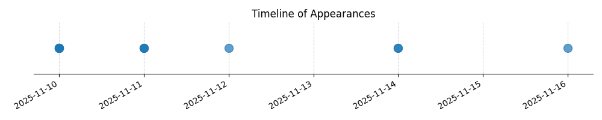

Kategorie: Letecké předpisy
Správná odpověď je C, protože NOTAM (Notice to Airmen) je přesně definované sdělení, které slouží k informování pilotů o dočasných změnách nebo mimořádných událostech v leteckém provozu, které nejsou obsaženy v AIP (Aeronautical Information Publication) a mají vliv na bezpečnost letu.

| Datum výskytu |
|---|
| 2025-11-16 |
| 2025-11-14 |
| 2025-11-12 |
| 2025-11-11 |
| 2025-11-10 |